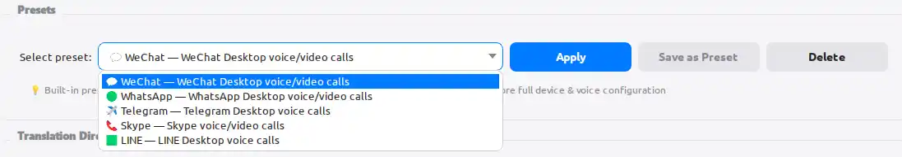
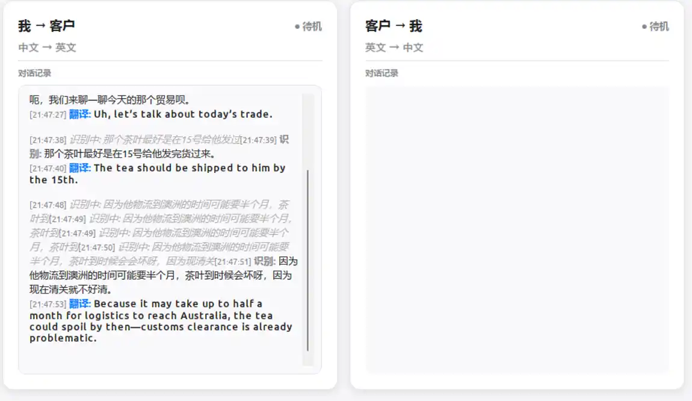
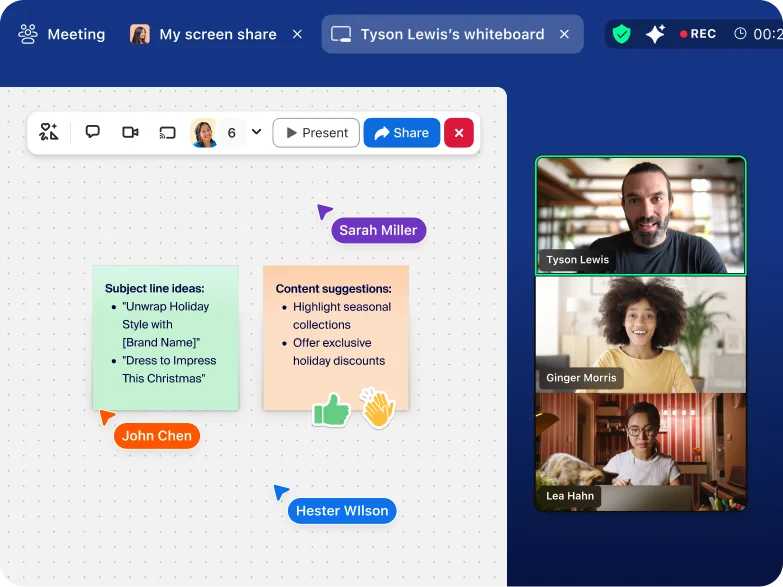

国际采购
英语客户阿拉伯语供应商
没有实时翻译时
需求反复确认，报价迟迟无法推进。
使用 RealTTS 后
双方直接沟通规格、价格与交期。
语言不同，交易不该停在原地。
当双方无法直接理解，价格、交期和信任都很难继续。实时同声传译，让沟通重新回到交易本身。
没有实时翻译时
需求反复确认，报价迟迟无法推进。
使用 RealTTS 后
双方直接沟通规格、价格与交期。
没有实时翻译时
产品细节讲不清，客户犹豫，沟通容易中断。
使用 RealTTS 后
产品卖点、售后和交付一次讲明白。
没有实时翻译时
物流、包装和付款细节需要多轮转述。
使用 RealTTS 后
关键节点即时确认，合作沟通更顺畅。
少一次误解，多一次成交机会。
跨境生意真正昂贵的，不是翻译费用，而是听错需求、报错价格、漏掉关键信息后失去的订单。
不用等翻译，不用反复打字。客户问价格、数量和交期，当场回应。
及时、连贯地表达方案和态度，让海外客户感受到你的响应速度与执行力。
原文与译文实时记录，会后可导出复盘。需求、报价、承诺都有依据。
沟通，不该等待。
双向语音实时识别、翻译与自然播报。你专注谈判、选品和客户关系，RealTTS 负责语言。
秒级响应
让对话保持自然节奏。
种常用语言
覆盖主流跨境贸易市场。
路同步传译
你与客户都能听懂彼此。
声音，依然是你。
创建专属音色，让翻译后的语音保留熟悉的表达与个性。跨语言，也不失真诚。
你的原声
翻译后的你
复杂的技术，简单的体验。
常用沟通工具快速配置。保存不同客户和市场的语言、音色与设备方案，下次一键恢复。

原文与译文实时显示。会议结束后一键导出，报价、需求和承诺不再遗漏。

独立处理双方音频路径。你的翻译传给客户，客户的翻译送入耳机，彼此清晰，互不干扰。
三步，开始全球沟通。
选择麦克风、耳机和沟通工具，或直接应用预设。
设定你与客户的语言和声音，一键交换方向。
点击开始，像平常一样说话。其余交给 RealTTS。
适用于你每天使用的沟通方式
为跨境业务而生。
实时听懂需求，准确表达方案。

数字、交期与条款，沟通更清楚。
快速响应售前与售后问题。
可配合常见的视频会议、即时通讯和语音通话工具使用，包括微信、WhatsApp、Telegram、Skype、LINE、Zoom 等。
不需要。RealTTS 在你的 Windows 电脑上运行，客户继续使用原有的沟通工具即可。
支持。双方的原文与译文会实时显示，并可在会议结束后导出为对话记录。
耳机可明显减少扬声器回声进入麦克风，让双向识别和翻译更稳定、更清晰。
当前面向 Windows 10 / 11 64 位电脑。
现在就把语言障碍变成订单机会
联系我们获取购买咨询和配置支持。告诉我们你常用的平台和目标语言，我们会给出适合的使用方案。
微信扫码联系
备注“RealTTS”，方便快速处理